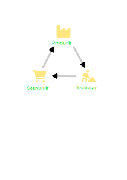

La Renta Básica como herramienta para la Transición Ecosocial
Ecologistas en Acción
Introducción
Ecologistas en acción toma sus principios de la ecología política y social, y por tanto, no solo nos preocupa el medio ambiente, sino también la justicia social.
Esta crisis está provocada del modelo de desarrollo neoliberal capitalista
- El sistema capitalista se basa en la creación y acumulación de riqueza (fundamentalmente material).
- Requiere, por tanto, de un crecimiento económico constante a través del incremento de la productividad de bienes y servicios.
- Ese crecimiento se basa en la explotación de los recursos naturales y la explotación de la mano de obra.
[width=50%]
Reparto de la riqueza por medio del empleo
- En el sistema capitalista el reparto de la riqueza se hace principalmente a través del mercado laboral.
- La satisfacción de las básicas, sobre todo materiales, depende del salario.
- Muchos de los derechos sociales (alimentación, vivienda, educación, sanidad, etc.) están supeditados a tener un empleo.
El agotamiento de recursos naturales
- El crecimiento del sistema capitalista cada vez depende menos de la mano de obra (tecnificación y automatización de procesos productivos) pero cada vez depende más de los recursos naturales. La extracción de materias primas se ha incrementado exponencialmente.
- Este crecimiento continuo, choca con los límites biofísicos del planeta. El agotamiento de los combustibles fósiles y de algunos materiales estratégicos (litio, cobalto, cobre, fostatos, etc.) está empezando a ralentizar el metabolismo del sistema.

Evolución del consumo de materiales
El fin del crecimiento
- Los sectores productivos más dependientes de estos materiales y que requieran más energía, van a verse forzados a decrecer.
- Las nuevas recetas para superar esta crisis (automatización, digitalización o la promesa de la inteligencia artificial) no van a poder impedir este decrecimiento.
El colapso medioambiental
A la vez que el metabolismo del sistema consume cada vez más insumos, produce más residuos y emisiones, sobrepasando la capacidad de carga de los ecosistemas.
Esto ha provocado una profunda crisis medioambiental:
- Cambio climático provocado por la emisión de gases de efecto invernadero.
- Pérdida de biodiversidad.
- Contaminación de los ecosistemas.
- Desertificación.
¡ESTA CRISIS AMENAZA LA VIDA EN EL PLANETA!
La urgencia de un cambio de modelo socioeconómico
- Desde Ecologistas en Acción venimos promoviendo desde hace décadas un cambio hacia un modelo socioeconómico que sea ambientalmente sostenible y socialmente justo.
- Un modelo que no dependa del crecimiento económico ilimitado, sino que sea capaz de satisfacer las necesidades de todas las personas, con equidad y sin sobrepasar los límites ecológicos del planeta.
La Transición Ecosocial
La transición hacia ese nuevo modelo económico y social, que hemos llamado Transición Ecosocial, implica profundos cambios en casi todos los ámbitos de la vida:
- Producción
- Consumo
- Trabajo
- Energético
- Alimentario
- Movilidad
- Residuos
- Gobernanza
La importancia de una Renta Básica Incondicional en la Transición Ecosocial
La Renta Básica Incondicional, como herramienta de redistribución de riqueza y de liberación del empleo asalariado, puede ser una herramienta fundamental en la Transición Ecosocial.
¿Qué papel podría jugar en la transformación de cada uno de los ámbitos anteriores?
Transición en la Producción
- Modelo de producción dentro de los límites ecológicos del planeta.
- Decrecimiento de sectores productivos más contaminantes y dependientes de recursos naturales: Automoción, aviación, turismo, textil, etc.
Variación del empleo por sectores la década 2020-2030
¿Qué aporta la Renta Básica?
- Soporte para las personas que pierdan su empleo en estos sectores.
- Facilita la transición hacia otros sectores más sostenibles. Mucha gente es consciente de la insostenibilidad de su trabajo, pero no puede dejarlo por miedo a no poder cubrir sus necesidades básicas. Ejemplo: Minería, automoción, industria armamentística, etc.
- ¿Cómo cubrir los trabajos socialmente necesarios (agricultura, cuidados, etc)?
- Necesidad de que la RB tenga una dimensión comunitaria, como por ejemplo la Renta Básica de las Iguales (Baladre) que propone un reparto de la renta básica en una parte individual y otra comunitaria.
- Complementar con trabajo garantizado.
Transición en el Consumo
- Reducción del consumo de bienes y servicios no esenciales.
- Satisfacción de las necesidades materiales básicas en sociedades con mercados y no de mercado.
- Consumo de proximidad y de temporada. Reducción de la huella del carbono de los productos que consumimos.
¿Qué aporta la Renta Básica?
- ¿Cómo hacer para que la RB no se convierta en un estímulo al consumo? ¿o que no se dirija a bienes y servicios insostenibles?
- Educación para el consumo responsable.
- Regulación publicitaria.
- Renta básica en especie. Cesta de la compra.
- Renta básica de la tierra. Reparto de la tierra.
- Hay estudios que muestran que el incremento del consumo en bienes posicionales disminuye al reducirse las diferencias entre ricos y pobres.
- La RB podría producir inflación si no se acompaña de medidas que regulen los precios de los bienes y servicios básicos. Regulación de los alquileres y de los precios de la energía, por ejemplo. También podría controlarse con el control estatal del dinero o mediante el uso de monedas locales ancladas a productos básicos.
Transición en el Trabajo - Empleo
- Reducción de la jornada laboral para repartir el empleo y el tiempo de trabajo de forma equitativa.
- Reconocimiento de los trabajos no remunerados esenciales para la vida, como los trabajos de cuidados.
- Empleos dignos, estables y bien remunerados.
¿Qué aporta la Renta Básica?
- Capacidad para renunciar a empleos precarios y mal remunerados.
- Reducción de la jornada laboral remunerada. Más tiempo para el trabajo no remunerado (cuidados, voluntariado, etc) y para la formación o el ocio.
- Mayor poder de negociación de las personas trabajadoras frente a los empleadores.
Transición Alimentaria
- Modelo alimentario basado en la agroecología, con una agricultura de cercanía que respete los ecosistemas y garantice la soberanía alimentaria de las poblaciones.
- Consumo de alimentos de temporada y de proximidad.
- Reducción del consumo de carne y de productos ultraprocesados.
- Fomento de los grupos de consumo y de cooperativas de productores.
¿Qué aporta la Renta Básica?
- Acceso a alimentos de mayor calidad y más saludables.
- Fomento de la agricultura de proximidad.
- Tiempo para la gestión de cooperativas o grupos de consumo.
Transición en la Movilidad
- Modelo de movilidad sostenible, con menos coches particulares y más transporte público, bicicletas y peatonalización.
¿Qué aporta la Renta Básica?
- Reduce el número de desplazamientos y las distancias recorridas por motivos laborales. Mucha gente optaría por empleos más cercanos a su domicilio o que le permitieran teletrabajar.
- Más tiempo para desplazamientos en bicicleta o a pie.
Transición en Residuos
- Transición hacia una economía circular, en la que se reduzca al máximo la generación de residuos y se fomente su reutilización y reciclaje.
- Acabar con la obsolescencia programada y diseñar los productos para maximizar la vida útil fomentando la reparación.
¿Qué aporta la Renta Básica?
- Más tiempo para la reparación y la reutilización de productos.
- Tasa para su financiación sobre los productos más contaminantes.
Transición en la fiscalidad
- Sistema fiscal más justo y progresivo que redistribuya la riqueza.
- Tasa que grave las actividades contaminantes o las transacciones financieras.
¿Qué aporta la Renta Básica?
- Financiación a través de impuestos a las rentas más altas.
- Financiación a través de impuestos a las actividades más contaminantes.
Transición en la Gobernanza y el Estado de Derecho
- Democracia participativa y transparente.
- Derechos para todas sin discriminación de género, raza, religión u orientación sexual, etc.
- Adelgazamiento y descentralización del Estado.
¿Qué aporta la Renta Básica?
- Mayor autonomía y libertad para las personas.
- Más tiempo para la participación política y social.
- Simplificación de la administración y reducción de la burocracia.